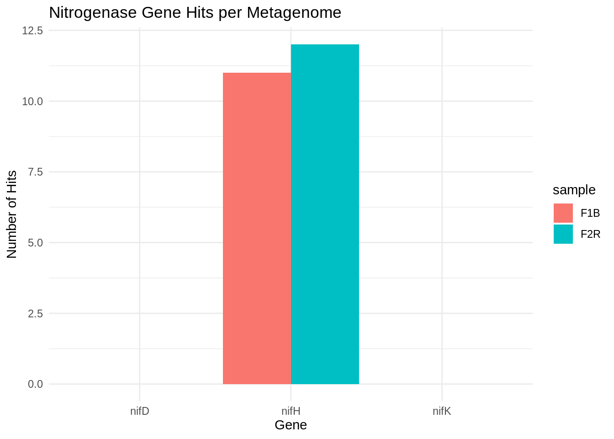

# move files from lab drive to Raven
scp "/Volumes/CRUZER16GB/F1B-KM40_R1_001.fastq.gz" \
rendavis@raven.fish.washington.edu:/home/shared/16TB_HDD_01/fish546/renee/Soil metagenome project
Introduction
Soil microbial ecology is complex and its composition depends on several factors. Soil microbial communits are found in higher concentrations in the rhizosphere, or root space. Plant roots provide carbohydrates and niches for microbes to flourish. Some of these microbes fix nitrogen, solubilize phosphorous, and perform other necessary activities. Additionally, mutualistic mycorrhizal fungi also provide structures for microbial residence and travel. Together, these underground dynamics boost soil carbon and nitrogen, further supporting plant growth and driving these biophilic cycles. However, anthropogenic disturbances like tilling and synthetic fertilizer use create soil dysbiosis and farm this ecological balance. BioBead is an innovative biodegradable hydrogel containing microbial consortia for soil health, addressing multiple factors in nutrient cycling and soil health.
For this study, I analyzed the metagenomes from 2 (out of 48) soil samples from a recent BioBead greenhouse trial with wheat plants. These will give me a sense of resident microbial (fungal and bacterial) communities prior to treatment BioBead, conventional fertilizer, and others.
- F1B - bulk field soil
- F2R - rhizosphere soil
The soil samples were collected at the end of experiment from each treatment, and the DNA was extracted with Qiagen DNAEasy PowerSoil kits. Shotgun metagenome sequencing was provided by Eurofins Genomics.
The purpose of this exercise is to understand shared vs unique taxa in each sample, and screen for the presence of nitrogenase genes. These are important, as organisms that fix nitrogen to the soil reduce the need for synthetic fertilizer input. I expect there to be a more diverse microbial community in the rhizosphere soil sample sample over the bulk one. Additionally, I expect to find more nif gene abundance in the rhizosphere sample. If this pipeline is effective, it will be scaled to analyze the entire 48 metagenome data set.
Data upload
To begin, I will upload a raw fastq file to Raven server. (Note that this needs to be done from the local terminal, not the server.)
Once successful, I uploaded the rest using rsync instead (better for handling multiple files, fewer chances of duplicates, conflicts etc).
# move remaining files from lab drive to Raven
rsync -av --progress \
/Volumes/CRUZER16GB/*.fastq.gz \
rendavis@raven.fish.washington.edu:/home/shared/16TB_HDD_01/fish546/renee/Data integrity and quality control
Checksums
Before I began working, I ran a MD5 check on the 4 metagenome fastq files.
find . -type f -exec md5sum-lite {} \; >> output.txt #found all files in the working directory, calculated its MD5 checksum, save to an output txt fileThis prints the results to a text file. Here is the output:
b24ae50750964ef8d01a8808051c73c7 ./F2R-KM41_R2_001.fastq.gz
a48a5ad0bc4ce07f641c0c647fe0dbaf ./F1B-KM40_R2_001.fastq.gz
88d5e83290598639d54218bc505bfe66 ./output.txt
a8be224ab035ea641ccd5a8c9d46c024 ./F2R-KM41_R1_001.fastq.gz
e34585c824e429f54ff34d919719f1c4 ./F1B-KM40_R1_001.fastq.gzmv output.txt md5checksums_metagenomes_2025.txt #renamed the file to something more descriptiveTo validate file integrity later, one could run the following code to ensure a match.
md5sum -c md5checksums_metagenomes_2025.txtQuality control
FastQC
I have been told that QC has been run on these, but we won’t take that at face value. For this I will use FastQC.
# run FastQC on the fastq files
/home/shared/FastQC-0.12.1/fastqc -t 36 -o output /home/shared/16TB_HDD_01/fish546/renee/*.fastq.gzAnalysis complete for F2R-KM41_R1_001.fastq.gz
Analysis complete for F2R-KM41_R2_001.fastq.gz
Analysis complete for F1B-KM40_R1_001.fastq.gz
Analysis complete for F1B-KM40_R2_001.fastq.gzThe .png files were downloaded to my desktop.
MultiQC
eval "$(/opt/anaconda/anaconda3/bin/conda shell.bash hook)"
conda activate
which multiqc
cd output
multiqc .The html report was saved in the output folder.
Preprocessing
We have to preprocess raw data to enable clean, high-quality reads ready for assembly. This involves 2 steps: trimming and merging forward and reverse reads.
Trimming using Trimmomatic
I need to trim raw data to remove adapters and low-quality bases. It’s important to do this prior to merging, as merging reads relies on the overlapping region between forward and reverse reads. If I try to merge before trimming, I could end up with incorrect overlaps, low quality merges, and related issues.
For this step we will use Trimmomatic, which I will had to install.
scp -r ~/Downloads/Trimmomatic-0.39 rendavis@raven.fish.washington.edu:/home/shared/16TB_HDD_01/fish546/renee #from the local terminalNow I will run it to trim adapters and low quality bases. I’ll stick with defaults of greater than or equal to 50 base pairs (bp), and 3 leading and trailing bp. I’ll do this in 2 steps with F1B R1/R2 and then F2R R1/R2.
cd /home/shared/16TB_HDD_01/fish546/renee
java -jar /home/shared/16TB_HDD_01/fish546/renee/Trimmomatic-0.39/trimmomatic-0.39.jar PE -threads 4 \
F1B-KM40_R1_001.fastq.gz F1B-KM40_R2_001.fastq.gz \
F1B-KM40_trimmed_R1_paired.fastq.gz F1B-KM40_trimmed_R1_unpaired.fastq.gz \
F1B-KM40_trimmed_R2_paired.fastq.gz F1B-KM40_trimmed_R2_unpaired.fastq.gz \
ILLUMINACLIP:TruSeq3-PE.fa:2:30:10 \
LEADING:3 TRAILING:3 SLIDINGWINDOW:4:20 MINLEN:50 #keeps bps equal or above 50 Quality encoding detected as phred33
Input Read Pairs: 31944124
Both Surviving: 29010263 (90.82%)
Forward Only Surviving: 1518244 (4.75%)
Reverse Only Surviving: 921543 (2.88%)
Dropped: 494074 (1.55%)
TrimmomaticPE: Completed successfullyThese are good numbers. Generally, anything over 80% both surviving is considered good. And 1.5% is a very low drop rate.
cd /home/shared/16TB_HDD_01/fish546/renee/raw-data
java -jar /home/shared/16TB_HDD_01/fish546/renee/Trimmomatic-0.39/trimmomatic-0.39.jar PE -threads 4 \
F2R-KM41_R1_001.fastq.gz F2R-KM41_R2_001.fastq.gz \
F2R-KM41_trimmed_R1_paired.fastq.gz F2R-KM41_trimmed_R1_unpaired.fastq.gz \
F2R-KM41_trimmed_R2_paired.fastq.gz F2R-KM41_trimmed_R2_unpaired.fastq.gz \
ILLUMINACLIP:/home/shared/16TB_HDD_01/fish546/renee/Trimmomatic-0.39/adapters/TruSeq3-PE.fa:2:30:10 #had to use the whole file path here
LEADING:3 TRAILING:3 SLIDINGWINDOW:4:20 MINLEN:50 #keeps bps equal or above 50 Quality encoding detected as phred33
Input Read Pairs: 27015389
Both Surviving: 26807327 (99.23%)
Forward Only Surviving: 208057 (0.77%)
Reverse Only Surviving: 0 (0.00%)
Dropped: 5 (0.00%)
TrimmomaticPE: Completed successfullyTrimmomatic produces unpaired and paired file outputs. Paired reads are those which both forward and reverse survived trimming. Unpaired reads indicate where only one of the pair survived (the other was discarded due to low quality or short length).
I’ll use the paired files for most downstream steps like merging and assembly, but will keep the unpaired files around just in case we need to embark on deeper analysis.
Merging forward and reverse reads using fastp
These are R1/R2 (forward and reverse reads) and will have to be merged. This is the last component of pre-processing as we work towards metagenome assembly. For this we will use fastp which is already installed on Raven.
cd /home/shared/16TB_HDD_01/fish546/renee
# Merge F1B-KM40
/home/shared/fastp-v0.24.0/fastp \
-i F1B-KM40_trimmed_R1_paired.fastq.gz \
-I F1B-KM40_trimmed_R2_paired.fastq.gz \
--merge \
--merged_out F1B-KM40_merged.fastq.gz \
# Merge F2R-KM41
/home/shared/fastp-v0.24.0/fastp \
-i F2R-KM41_trimmed_R1_paired.fastq.gz \
-I F2R-KM41_trimmed_R2_paired.fastq.gz \
--merge \
--merged_out F2R-KM41_merged.fastq.gz \Read1 before filtering:
total reads: 29010263
total bases: 4140614008
Q20 bases: 4050447746(97.8224%)
Q30 bases: 3845738339(92.8785%)
Read2 before filtering:
total reads: 29010263
total bases: 4154017583
Q20 bases: 4065704832(97.874%)
Q30 bases: 3866115895(93.0693%)
Merged and filtered:
total reads: 7474936
total bases: 1650421008
Q20 bases: 1630687369(98.8043%)
Q30 bases: 1578354375(95.6334%)
Filtering result:
reads passed filter: 58018466
reads failed due to low quality: 0
reads failed due to too many N: 2060
reads failed due to too short: 0
reads with adapter trimmed: 635320
bases trimmed due to adapters: 11744183
reads corrected by overlap analysis: 2160886
bases corrected by overlap analysis: 2804599
Duplication rate: 7.13807%
Insert size peak (evaluated by paired-end reads): 268
Read pairs merged: 7474936
% of original read pairs: 25.7665%
% in reads after filtering: 100%
JSON report: fastp.json
HTML report: fastp.html
/home/shared/fastp-v0.24.0/fastp -i F1B-KM40_trimmed_R1_paired.fastq.gz -I F1B-KM40_trimmed_R2_paired.fastq.gz --merge --merged_out F1B-KM40_merged.fastq.gz
fastp v0.24.0, time used: 178 seconds
Read1 before filtering:
total reads: 26807327
total bases: 4021099050
Q20 bases: 3808188117(94.7052%)
Q30 bases: 3500492825(87.0531%)
Read2 before filtering:
total reads: 26807327
total bases: 4021099050
Q20 bases: 3793251312(94.3337%)
Q30 bases: 3477357474(86.4778%)
Merged and filtered:
total reads: 6724249
total bases: 1525795473
Q20 bases: 1489384743(97.6137%)
Q30 bases: 1418180834(92.947%)
Filtering result:
reads passed filter: 51640358
reads failed due to low quality: 1969720
reads failed due to too many N: 4576
reads failed due to too short: 0
reads with adapter trimmed: 170138
bases trimmed due to adapters: 2613154
reads corrected by overlap analysis: 2552667
bases corrected by overlap analysis: 5056209
Duplication rate: 6.67899%
Insert size peak (evaluated by paired-end reads): 268
Read pairs merged: 6724249
% of original read pairs: 25.0836%
% in reads after filtering: 100%Around 25% of original read pairs got merged, which appears to be typical for paired-end read merging.
As a final step, we’ll preview the file and do a quality check on the merged files using FastQC.
# run FastQC on the fastq files
/home/shared/FastQC-0.12.1/fastqc -t 36 -o output /home/shared/16TB_HDD_01/fish546/renee/*merged.fastq.gzHTML report results: F1B-KM40_merged.fastq.gz; F2R-KM41_merged.fastq.gz. F1B has higher per base sequence quality, but both look good.
Assembly using MEGAHIT
Installation
First I clone the repository into our working folder.
cd /home/shared/16TB_HDD_01/fish546/renee/
git clone https://github.com/voutcn/megahit.git #this brings the installation files into our working directory
cd megahit #navigating to the folderThen I have to compile MEGAHIT.
cd /home/shared/16TB_HDD_01/fish546/renee/
mkdir build
cd build
cmake ../megahit
make
./megahit --version # tests the installation; MEGAHIT v1.2.9Assembly
Once this is done, I ran each file independently to produce two assemblies.
cd /home/shared/16TB_HDD_01/fish546/renee/build #pointing wd to the binary files
./megahit -r ../F1B-KM40_merged.fastq.gz #specifying input file
-o megahit_F1B_KM40_out #output directory
--min-contig-len 500 #over 500 bps
-t 8 #8 threadscd /home/shared/16TB_HDD_01/fish546/renee/build
./megahit \
-r ../F2R-KM41_merged.fastq.gz \
-o megahit_F2R_KM41_out \
--min-contig-len 500 \
-t 8Each run took 120 minutes.
File check
I want to see a text file when we check files using the head command.
#check F1B_KM40
cd /home/shared/16TB_HDD_01/fish546/renee/build/megahit_F1B_KM40_out
head final.contigs.fa#checkF2R_KM41
cd /home/shared/16TB_HDD_01/fish546/renee/build/megahit_F2R_KM41_out
head final.contigs.faThe output should like this:
>k141_8240 flag=1 multi=2.0000 len=511
GGGGAACGCGCGCGGACGCGGGAAGGCCGCCTTCAGGTCGAAC> = start of a header.For the meta data: k141 refers to the k-mer size (k=141) used when assembling that contig. 8240 is the ID or serial number assigned to that contig. It’s the name of the contig. Then there is the internal MEGAHIT flag for the contig, usually about whether the contig is trusted/high-confidence (flag=1 usually means it’s “normal” and usable). Then there is the multiplicity (or coverage estimate), which refers to how many times this contig appeared in the assembly graph. Finally, we have the contig length.
Phylogenetic trees using Megan
MEGAN is a program that graphs the taxonomical content from metagenomic data sets. To start, I’ll read in files.
ls /home/shared/16TB_HDD_01/fish546/renee/F2R - rhizospheric soil
Then we will query Diamond BLAST with the rhizospheric soil metagenome.
/home/shared/diamond-2.1.8 blastx \
--db /home/shared/16TB_HDD_01/sam/databases/blastdbs/ncbi-nr-20250429.dmnd \
--query /home/shared/16TB_HDD_01/fish546/renee/F2R-KM41_merged.fastq.gz \
--out output/sr-blastx.daa \
--outfmt 100 \
--top 5 \
--block-size 15.0 \
--index-chunks 4 \
--threads 32 /home/shared/megan-6.24.20/tools/daa-meganizer \
--in output/sr-blastx.daa \
--threads 32 \
--mapDB /home/shared/16TB_HDD_01/sr320/github/renee-myco/project/data/megan-map-Feb2022.db/home/shared/megan-6.24.20/tools/daa2rma \
--in output/sr-blastx.daa \
--mapDB /home/shared/16TB_HDD_01/sr320/github/renee-myco/project/data/megan-map-Feb2022.db \
--out output/sr-blastx-meganized.rma6 \
--threads 40 2>&1 | tee --append output/daa2rma_log.txtThe tree can be viewed here:
A total of 1002 taxa were detected. The top hits include Acidobacteria bacterium, Actinobacteria bacterium, Chloroflexi bacterium, Verrucomicrobia bacterium. (All are bacteria.) Genera of fungi detected include: Mortierellaceae, Diversisporales, Paraglomus, Rhizophagus, Metarhizium.
F1B - bulk field soil
Now we will perform the same functions using the second fasta file. First we run the fastq file against the NCBI database.
/home/shared/diamond-2.1.8 blastx \
--db /home/shared/16TB_HDD_01/sam/databases/blastdbs/ncbi-nr-20250429.dmnd \
--query /home/shared/16TB_HDD_01/fish546/renee/F1B-KM40_merged.fastq.gz \
--out output/sr-blastx-f1b.daa \
--outfmt 100 \
--top 5 \
--block-size 15.0 \
--index-chunks 4 \
--threads 32Then we start to get the data in MEGAN.
/home/shared/megan-6.24.20/tools/daa-meganizer \
--in output/sr-blastx-f1b.daa \
--threads 32 \
--mapDB /home/shared/16TB_HDD_01/sr320/github/renee-myco/project/data/megan-map-Feb2022.db This produces a .rma file that can be opened into MEGAN and the metadata used to create a phylogenetic tree.
/home/shared/megan-6.24.20/tools/daa2rma \
--in output/sr-blastx-f1b.daa \
--mapDB /home/shared/16TB_HDD_01/sr320/github/renee-myco/project/data/megan-map-Feb2022.db \
--out output/sr-blastx-f1b.meganized.rma6 \
--threads 40 2>&1 | tee --append output/daa2rma_log2.txtThe tree can be viewed here:
A total of 933 taxa were detected. The top hits include Acidobacteria bacterium, Alphaproteobacteria bacterium, Betaproteobacteria bacterium, Deltaproteobacteria bacterium. (All are bacteria.) Groups of fungi detected include: Mortierellaceae, Diversisporales, Paraglomus, Rhizophagus, Aspergillaceae.
While there are fewer taxa than in rhizosphere soil, the general composition seems to be similar. Most soil microbes are located in the rhizosphere, so this is consistent with our expectations.
Metagenome data comparison
Now that I have assembled metagenomes and taxonomy, I want to know how these metagenomes compare to one another. Specifically, I’m interested in what taxa they have in common and which are unique.
I could export the data in Megan (.rma6 file) to a .txt, then convert the data into a common format like .xlsx or Google Sheets for comparison. But the .txt file sizes can be too large (>600 MB) for these programs. Instead I can use some command-line tools to get a more manageable species list as a .txt in the output folder.
/home/shared/megan-6.24.20/tools/rma2info \
-i output/sr-blastx-f2r.meganized.rma6 \
-s Taxonomy \
-o output/f2r_species.txt
/home/shared/megan-6.24.20/tools/rma2info \
-i output/sr-blastx-f1b.meganized.rma6 \
-r2c Taxonomy \
-o output/f1b_species.txtUnfortunately, we only have the numeric taxon IDs, not species names. We can see species ID in the Megan GUI, but it’s not being extracted with rma2info.
So I’ll use R to read the files, map NCBI Taxonomy IDs to names, and summarize counts by species or genus.
R studio cleanup
library(taxize)
library(dplyr)
library(readr)
library(tidyr)
Sys.setenv(ENTREZ_KEY = "d228d1d99f7f95247415e561fdb7a2bdd408") #tells taxize your NCBI ke
map_taxa <- function(file_path, label) {
df <- read_tsv(file_path, col_names = c("read_id", "tax_id")) %>%
mutate(
source = label,
tax_id = as.character(tax_id)
)
unique_ids <- unique(df$tax_id)
# Query NCBI with taxize
tax_lookup <- taxize::classification(unique_ids, db = "ncbi", messages = FALSE)
# create data frame
tax_df <- bind_rows(lapply(tax_lookup, function(x) {
if (inherits(x, "data.frame")) {
x %>%
filter(rank %in% c("genus", "species")) %>%
select(rank, name) %>%
pivot_wider(names_from = rank, values_from = name)
} else {
tibble(genus = NA_character_, species = NA_character_)
}
}), .id = "tax_id")
# Coerce tax_id to character again to match df
tax_df <- tax_df %>% mutate(tax_id = as.character(tax_id))
# Join and return selected columns
df %>%
left_join(tax_df, by = "tax_id") %>%
select(source, tax_id, genus, species)
}
# load in files
f1b <- map_taxa("output/f1b_species.txt", "f1b")
f2r <- map_taxa("output/f2r_species.txt", "f2r")
# Combine/summarize
combined <- bind_rows(f1b, f2r) %>%
group_by(source, genus, species) %>%
summarise(n_reads = n(), .groups = "drop") %>%
arrange(desc(n_reads))
# pivot for easier comparison
pivoted <- combined %>%
unite("taxon", genus, species, sep = " ", na.rm = TRUE) %>%
pivot_wider(names_from = source, values_from = n_reads, values_fill = 0)
print(pivoted)
# save results to .csv for sharing
write_csv(pivoted, "output/taxon_comparison.csv")The .csv file was imported to a GoogleSheet for cleanup, and exported as a new metagenome_comparison.csv for further analysis and visualization.
Analysis of nitrogenase gene clusters
Nitrogenase is a bacterial enzyme that fixes atmospheric nitrogen (N2) to ammonia (NH3). It consists of alpha (nifD) and beta (nifK) subunits of the molybdenum-iron protein and an ATP-binding iron-sulfur protein (nifH). We will need to use some annotation tools to screen for nif genes in our samples (e.g., nifH, nifD, nifK).
- nifH: NCBI HMM accession TIGR01287.1
- nifK: NCBI HMM accession TIGR01286.1
- nifD: NCBI HMM accession TIGR01282.1
To do this, we will use a tool called HMMER to search sequence databases for sequence homologs like nif genes. It uses probabilistic models called profile hidden Markov models (profile HMMs).
nif gene activity between samples
In theory, we could use HMMER to get the number of nitrogenase genes directly from our contigs.fa files. But since nitrogenase genes are protein-coding, and HMMER works best on predicted proteins, raw nucleotide sequences like your contigs.fa are not ideal and could lead to false negatives.
Prodigal for gene prediction
First, I need to predict proteins from the contigs from the assembly step. Prodigal was cloned from GitHub, installed /home/shared/16TB_HDD_01/fish546/renee/ and compiled using commands similar to those in previous sections.
/home/shared/16TB_HDD_01/fish546/renee/Prodigal/prodigal \
-i /home/shared/16TB_HDD_01/fish546/renee/build/megahit_F2R_KM41_out/final.contigs.fa \
-a /home/shared/16TB_HDD_01/fish546/renee/build/megahit_F2R_KM41_out/predicted_proteins.faa \
-d /home/shared/16TB_HDD_01/fish546/renee/build/megahit_F2R_KM41_out/predicted_nucleotides.fna \
-o /home/shared/16TB_HDD_01/fish546/renee/build/megahit_F2R_KM41_out/prodigal_output.gbk \
-f gbk \
-p metaThe output confirmed a number of hits for this file. We can see predicted_proteins.faa, but unfortunately cannot preview the file using the head command. Now we’ll do this for the second metagenome.
/home/shared/16TB_HDD_01/fish546/renee/Prodigal/prodigal \
-i /home/shared/16TB_HDD_01/fish546/renee/build/megahit_F1B_KM40_out/final.contigs.fa \ # input FASTA file of assembled contigs
-a /home/shared/16TB_HDD_01/fish546/renee/build/megahit_F1B_KM40_out/predicted_proteins.faa \ # output amino acid sequences (for HMMER screening)
-d /home/shared/16TB_HDD_01/fish546/renee/build/megahit_F1B_KM40_out/predicted_nucleotides.fna \
-o /home/shared/16TB_HDD_01/fish546/renee/build/megahit_F1B_KM40_out/prodigal_output.gbk \
-f gbk \ #format of output file, GenBank format
-p meta. #mode optimized for metagenomic dataNow we have 2 protein fasta files that we can use for a HMMER search.
HMMER
I searched the protein fasta files for specific HMMs. To do this, I downloaded the HMM files from the NCBI accession pages in the previous section, then uploaded them to Raven via scp command. Before we run a search, I needed to index the .hmm files.
cd /home/shared/16TB_HDD_01/fish546/renee/hmm_profiles/
hmmpress nifH.hmm
hmmpress nifD.hmm
hmmpress nifK.hmmThen I was ready to start searching the F2R protein fasta.
hmmsearch --tblout output/nif_results/F2R/nifH.tbl \
--cpu 4 \
/home/shared/16TB_HDD_01/fish546/renee/hmm_profiles/nifH.hmm \
/home/shared/16TB_HDD_01/fish546/renee/build/megahit_F2R_KM41_out/predicted_proteins.faa
hmmsearch --tblout output//nif_results/F2R/nifD.tbl \
--cpu 4 \
/home/shared/16TB_HDD_01/fish546/renee/hmm_profiles/nifD.hmm \
/home/shared/16TB_HDD_01/fish546/renee/build/megahit_F2R_KM41_out/predicted_proteins.faa
hmmsearch --tblout output//nif_results/F2R/nifK.tbl \
--cpu 4 \
/home/shared/16TB_HDD_01/fish546/renee/hmm_profiles/nifK.hmm \
/home/shared/16TB_HDD_01/fish546/renee/build/megahit_F2R_KM41_out/predicted_proteins.faaNow we will repeat the same commands for F1B.
hmmsearch --tblout output/nif_results/F1B/nifH.tbl \
--cpu 4 \
/home/shared/16TB_HDD_01/fish546/renee/hmm_profiles/nifH.hmm \
/home/shared/16TB_HDD_01/fish546/renee/build/megahit_F1B_KM40_out/predicted_proteins.faa
hmmsearch --tblout output//nif_results/F1B/nifD.tbl \
--cpu 4 \
/home/shared/16TB_HDD_01/fish546/renee/hmm_profiles/nifD.hmm \
/home/shared/16TB_HDD_01/fish546/renee/build/megahit_F1B_KM40_out/predicted_proteins.faa
hmmsearch --tblout output//nif_results/F1B/nifK.tbl \
--cpu 4 \
/home/shared/16TB_HDD_01/fish546/renee/hmm_profiles/nifK.hmm \
/home/shared/16TB_HDD_01/fish546/renee/build/megahit_F1B_KM40_out/predicted_proteins.faaVisualizing nif gene hits
We can vizualize the number of hits of nif genes across the samples using a simple bar graph. We will keep the 0 counts for nifD and nifK in the interest of a complete data presentation.
# Load libraries
library(tidyverse)
library(ggplot2)
# paths to .tbl files
tbl_files <- list(
F1B_nifH = "output/nif_results/F1B/nifH.tbl",
F1B_nifD = "output/nif_results/F1B/nifD.tbl",
F1B_nifK = "output/nif_results/F1B/nifK.tbl",
F2R_nifH = "output/nif_results/F2R/nifH.tbl",
F2R_nifD = "output/nif_results/F2R/nifD.tbl",
F2R_nifK = "output/nif_results/F2R/nifK.tbl"
)
# parse tblout and count hits
parse_tbl <- function(file, sample, gene) {
lines <- readLines(file)
data_lines <- lines[!grepl("^#", lines)] # Remove comment lines
n_hits <- length(data_lines) # Count non-comment lines
tibble(sample = sample, gene = gene, hits = n_hits)
}
# making a data frame
results <- bind_rows(
parse_tbl(tbl_files$F1B_nifH, "F1B", "nifH"),
parse_tbl(tbl_files$F1B_nifD, "F1B", "nifD"),
parse_tbl(tbl_files$F1B_nifK, "F1B", "nifK"),
parse_tbl(tbl_files$F2R_nifH, "F2R", "nifH"),
parse_tbl(tbl_files$F2R_nifD, "F2R", "nifD"),
parse_tbl(tbl_files$F2R_nifK, "F2R", "nifK")
)
# simple barplot of gene hits per sample
ggplot(results, aes(x = gene, y = hits, fill = sample)) +
geom_col(position = position_dodge()) +
labs(title = "Nitrogenase Gene Hits per Metagenome",
x = "Gene",
y = "Number of Hits") +
theme_minimal()
Conclusions
no nifD or nifK
slightly more nif genes in the rhizosphere than bulk soil
detected taxa are known diazotrophs
Next steps: scaling up
Data integrity and QC
Preprocessing
Assembly
Metagenome comparisons
nif gene analysis
References
Bolger, A. M., Lohse, M., & Usadel, B.(2014). Trimmomatic: A flexible trimmer for Illumina Sequence Data. Bioinformatics, btu170.
F. Meyer, D. Paarmann, M. D’Souza, R. Olson , E.M. Glass, M. Kubal, T. Paczian, A. Rodriguez, R. Stevens, A. Wilke, J. Wilkening, and R. A. Edwards. The Metagenomics RAST server — A public resource for the automatic phylogenetic and functional analysis of metagenomes. BMC Bioinformatics 2008, 9:386. http://www.biomedcentral.com/1471-2105/ 9/386
Huson DH, Auch AF, Qi J, Schuster SC. MEGAN analysis of metagenomic data. Genome Res. 2007 Mar;17(3):377-86. doi: 10.1101/gr.5969107. Epub 2007 Jan 25. PMID: 17255551; PMCID: PMC1800929.
Hyatt, D., Chen, GL., LoCascio, P.F. et al. Prodigal: prokaryotic gene recognition and translation initiation site identification. BMC Bioinformatics 11, 119 (2010). https://doi.org/10.1186/1471-2105-11-119
NFixDB (Nitrogen Fixation DataBase) - A Comprehensive Integrated Database for Robust ’Omics Analysis of Diazotrophs. (preprint)
Masuda Y, Mise K, Xu Z, Zhang Z, Shiratori Y, Senoo K, Itoh H. 2024. Global soil metagenomics reveals distribution and predominance of Deltaproteobacteria in nitrogen-fixing microbiome. Microbiome. 12(1):95. doi:10.1186/s40168-024-01812-1.
Song Z-Q, Wang L, Liang F, Zhou Q, Pei D, Jiang H, Li W-J. 2022. nifH gene expression and diversity in geothermal springs of Tengchong, China. Front Microbiol. 13:980924. doi:10.3389/fmicb.2022.980924.
Thomas T, Gilbert J, Meyer F. Metagenomics - a guide from sampling to data analysis. Microb Inform Exp. 2012 Feb 9;2(1):3. doi: 10.1186/2042-5783-2-3.
Zhang J, Kobert K, Flouri T, Stamatakis A. PEAR: A fast and accurate Illimuna Paired-End reAd mergeR.
Vollmers J, Wiegand S, Kaster AK. Comparing and Evaluating Metagenome Assembly Tools from a Microbiologist’s Perspective - Not Only Size Matters! PLoS One. 2017 Jan 18;12(1):e0169662. doi: 10.1371/journal.pone.0169662. PMID: 28099457; PMCID: PMC5242441.